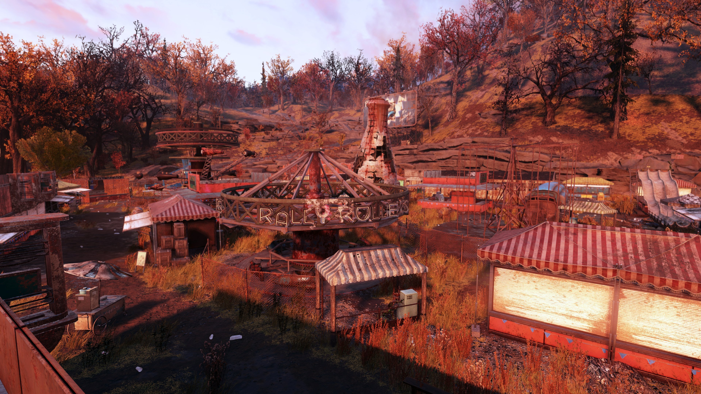
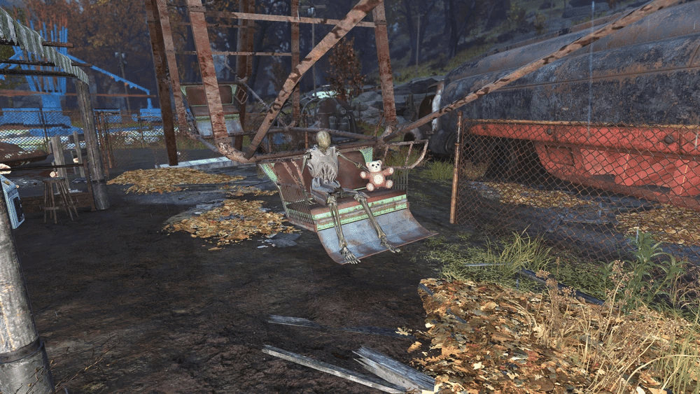
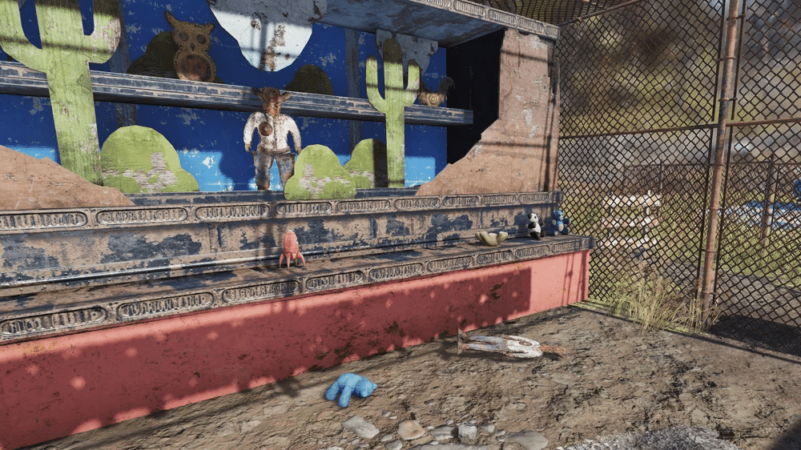
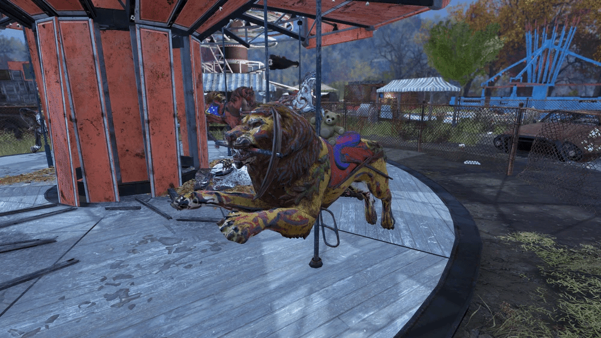
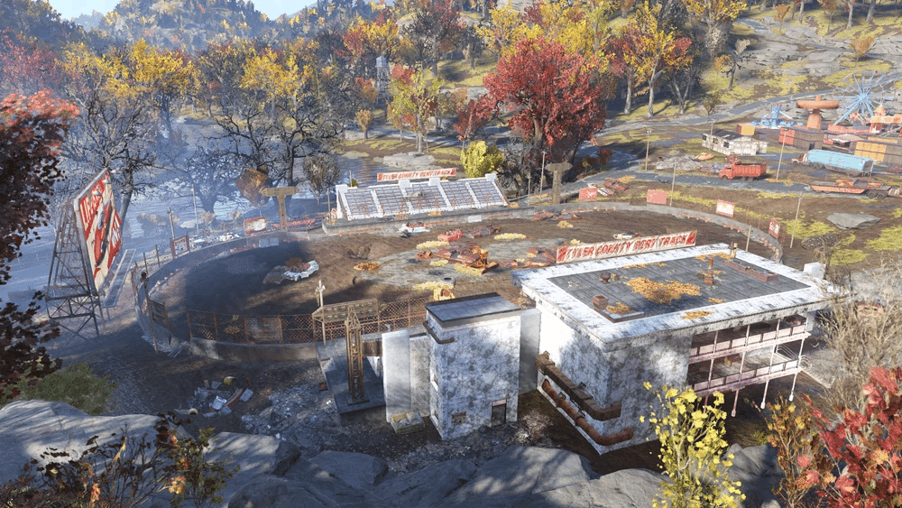
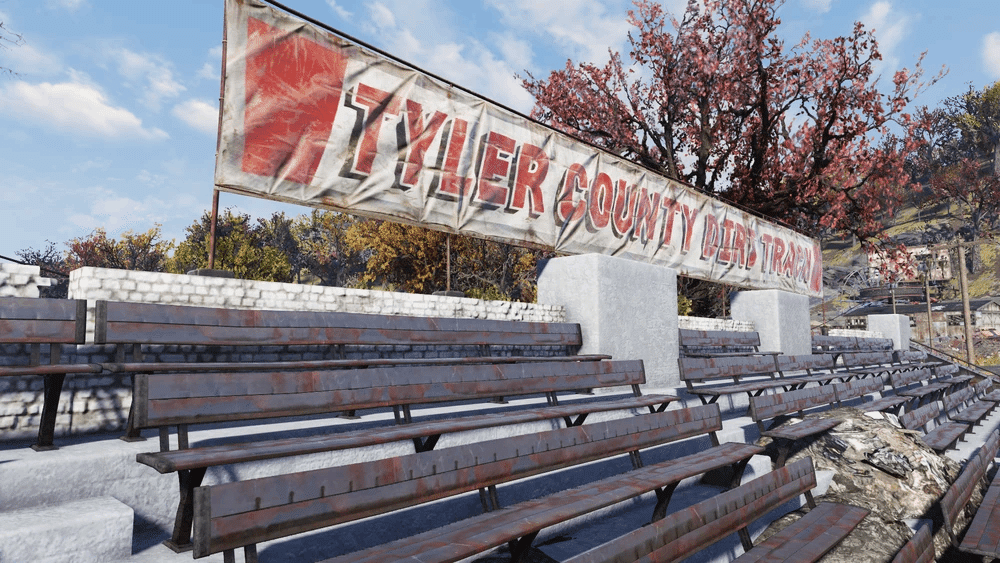
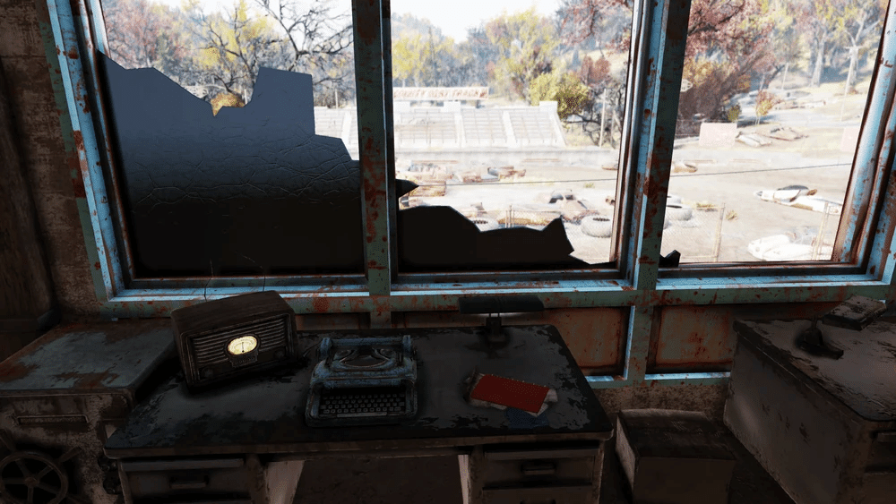
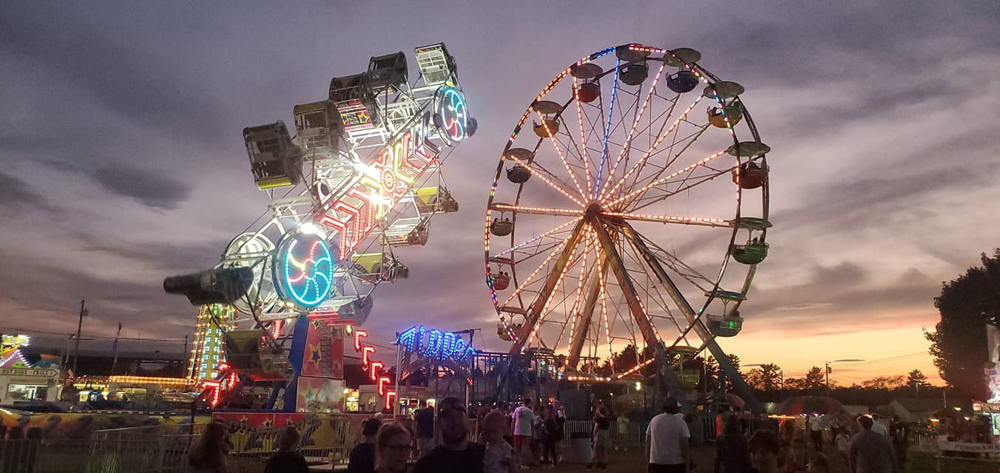
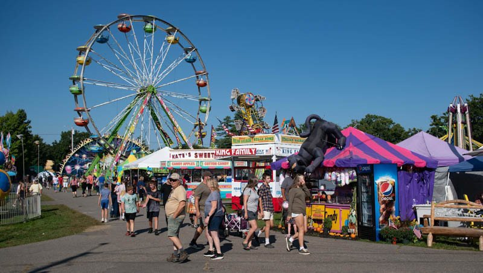
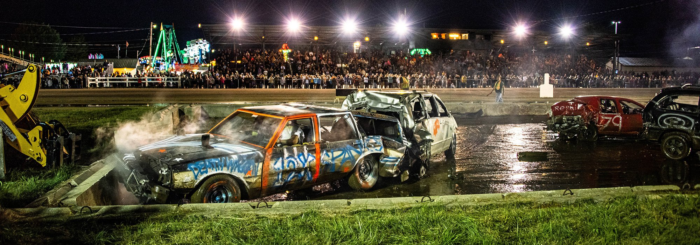

タイラー郡移動遊園地
Fallout76
州道81号線と90号線の交差点に位置するこの広大な遊園地は、大戦以前は観光地として栄えていました。
アトラクションには、高さ100フィートの観覧車、クラシックなメリーゴーランド、乗り物、売店、工芸品、アーケードゲーム、家畜のショーとオークションなどがありました。
レイアウト
タイラー郡移動遊園地は、州道81号線を挟んでタイラー郡のダートトラックの向かい側にある広大な芝生の広場です。
「タイラー郡スケア！」ハロウィンイベントでは、様々な催し物が予定されており、その装飾は今でも会場周辺で見ることができます。

園内には、ラリーローラー、ロケットワール、メリーゴーランド、観覧車などの乗り物があります。
その他、ジャートス（屋根にはリーボヴィッツ(*)が住んでいます）、ホールインワン、ナッシング・バット・ネット、バンディット・ラウンドアップなどのアトラクションもあります。
アトミックローラー、ワック・ア・コミー、フープショットなどのアーケードゲームもあります。

景品ブースは会場西側、バンディット・ラウンドアップ・ブースの近くにあり、いくつかのおもちゃが設置されています。
会場中央には、巨大なヌカ・コーラのボトルの形をした背の高いスタンドが設置されています。
スタンドの中には、無料のヌカ・コーラの試飲と救急用品が置いてあります。
ジャー・トス・ブースには、 約30個のメイソンジャーが置いてあります。

ファンネル・ファンの売店には調理場があります。
西側の仮設駐車場にある小屋には、「タイラー郡の恐怖！」と書かれた看板が掲げられています。
中には、かぼちゃ、キャンディー、オレンジと黒の飾り で飾られたハロウィンの飾り付けと、手作りの作業台が置かれています。

注目すべき戦利品
私の物語- ファーム・トゥ・フードのブースの屋根に貼ってあります。ウェイストランダーズ以前はジャートスブースに置かれていました。
3 つのボブルヘッド
「タイラー郡の恐怖」内部、正面近くの長いテーブルの上。
巨大なボトルの形をしたヌカコーラのスタンドの金属棚の上。
会場の南側、「Hoop Shots」ゲームが 3 つある部屋のトークン ディスペンサーの上。
3つの雑誌
大きな滑り台の近くにある長い金属製の納屋の中にある、2 つの木製の樽のうちの 1 つの上。
緑と白のトップが付いた賞品ブース内の、おもちゃのロケットが置かれた棚。
アーケードの東側、「リンゴ、ホットドッグ」の屋台の近く、仮設トイレ内。
タイラー郡のダートトラック

タイラー郡移動遊園地に隣接するワークショップです。
タイラー郡ダートトラックは、「ハロウィン・ナイト・スリル」と題した、一夜に10種目のデモリション・ダービーを開催する予定で、「ホット」ロッド・ダニエルズが出演する予定だった。
入場料は大人34.20ドル、子供24.20ドルだったが、駐車場は無料で、家族向けに「ハロウィン・ヘイライド」も提供される予定だった。
レイアウト
この場所は、南北に観客席を備えた広大なダートレーストラックです。
トラックの中央はワークショップエリアになっており、資源の堆積場、掘削機、そして動かない車が置かれています。

南側スタンドの最上階には、スタンド裏の階段からアクセスできる2階建てのアナウンサーブースがあります。

建物の最上階にある広い部屋には、トラックに向けられたカメラと複数の机が設置されています。
部屋には施錠された金庫と救急箱があり、机の上には Mr.ハンディの模型が置かれています。
資源は、水（3）、食料（1）、肥料（1）、ジャンク（1 ）、銀（3）、アルミニウム（1）、鉄（1）です。
境界線のすぐ外側、西側の小さな小屋には、ケミストリーステーションがあります。
この場所には、通常、フェラルグールが生息しています。
注目すべき戦利品
潜在的なワークショップ計画
アナウンサーブース内のラジオの右側の机の上。
潜在的な武器改造
アナウンサーブースの屋根の上、入植者の死体の近く。
Mr. ハンディ モデル
アナウンサー ブース内の机の上、壊れた端末の右側。
現実では

実のウェストバージニア州タイラー郡（Tyler County）にある同名の場所を直接参考にしています。
現実のタイラー郡移動遊園地は、Middlebourne（ミドルボーン）という町の近く、Middle Island Creek沿いの平坦な土地に位置し、State Route 18沿いにあります。

1963年に設立されたこのフェアグラウンドは、毎年開催されるTyler County Fairの会場で、ライブ音楽、乗り物、ゲーム、畜産ショーなどのアトラクションが楽しめます。
隣接するTyler County Speedway（タイラー郡スピードウェイ）は、ダートトラックレースの会場として有名で、1974年から運営されており、ゲーム内のダートトラックもこれを反映しています。
現実のフェアは、2025年7月28日から8月2日まで開催されており、非営利団体Tyler County Fair Associationが運営。

ゲームのようにカーニバル要素が強く、Fallout 76の開発元Bethesdaがウェストバージニアのローカル文化を忠実に再現した例といえます。
補足
リーボヴィッツ
モートに「特別なスクラッパー」と評されたリーボウィッツは、静寂を求めてフェアの屋台の上に住み着いていた。
彼は、下にいるスコーチが不審な来訪者を寄せ付けないと信じていたのだ。
ある時、リーボウィッツはモートと接触した。
リーボウィッツはWV製材所への潜入方法を知っていると自慢していた。
彼が知っている方法は、実際にはステルスボーイを使用するだけだと判明した。
ステルスボーイの機能を完全に理解しているわけではないようだが、ステルスボーイをフル活用するには自分の機敏さが足りないことを自覚している。
リーボウィッツが自身の経歴について尋ねられた場合、彼は政府の研究所から脱走した科学実験と答えている。
え?現実に存在するの? 収集癖がある私にとっては最高のロケーションです。
又、敵がスコーチで統一されているため、クリスマスイベントや、トレジャーハンターイベントでお世話になりました。
This article uses material from the “Endor” article on the Star Wars wiki at Fandom and is licensed under the Creative Commons Attribution-Share Alike License.
コミュニティ維持のため、寄付を受け付けております。
> COMMENTS